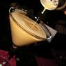 |
Alexander alexander tan CC-BY-2.0 · Jason Lam |
creamysweet | winterholiday | after_dinnerdate_nightclassic | brandy_cognacliqueur medium · 17.3% · alcoholic diff 2 · coupe · shaken |
30 ml Cognac or brandy; 30 ml Dark crème de cacao; 30 ml Cream |
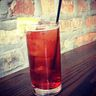 |
Americano americano red CC-BY-2.0 · Conrad and Peter |
bitterbubblyherbal | springsummer | aperitifclassic | amaro_aperitif light · 9.3% · low_abv diff 1 · rocks · built |
30 ml Campari; 30 ml Sweet (red) vermouth; top: Splash of soda water |
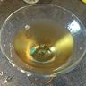 |
Angel Face angel_face amber CC-BY-SA-2.0 · Michael Styne from Averill Park, NY, USA |
spirit_forwardfruity | fall | nightcapdate_nightclassic | ginbrandy_cognac strong · 27.7% · alcoholic diff 2 · coupe · shaken |
30 ml Gin; 30 ml Apricot brandy (liqueur); 30 ml Calvados or applejack |
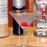 |
Aviation aviation lavender Public-Domain · Bskinner112 at English Wikipedia |
sourherbalfruity | spring | date_nightaperitifclassic | gin strong · 23.8% · alcoholic diff 2 · coupe · shaken |
45 ml Gin; 15 ml Maraschino liqueur; 15 ml Lemon juice; 1 barspoon Crème de violette |
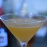 |
Between the Sheets between_the_sheets pale gold CC-BY-SA-4.0 · Zach |
sourfruityspirit_forward | all_year | date_nightpartyclassic | rum_whitebrandy_cognac strong · 26.2% · alcoholic diff 2 · coupe · shaken |
30 ml White rum; 30 ml Cognac or brandy; 30 ml Triple sec; 20 ml Lemon juice |
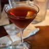 |
Boulevardier boulevardier deep red CC-BY-SA-2.0 · Edsel Little |
bitterspirit_forwardsweet | fallwinter | nightcapclassic | whiskey_bourbonamaro_aperitif strong · 25.8% · alcoholic diff 1 · coupe · stirred |
45 ml Bourbon or rye whiskey; 30 ml Campari; 30 ml Sweet (red) vermouth |
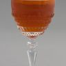 |
Brandy Crusta brandy_crusta amber CC-BY-SA-3.0 · Ralf Roletschek |
sourspirit_forwardfruity | all_year | date_nightclassic | brandy_cognac strong · 24.1% · alcoholic diff 2 · wine · shaken |
52.5 ml Brandy; 7.5 ml Maraschino liqueur; 1 barspoon Orange curaçao; 15 ml Lemon juice; 1 barspoon Simple syrup; 2 dash Angostura bitters; pinch: Sugar for the rim |
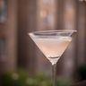 |
Casino casino pale yellow CC-BY-SA-2.0 · Adrian Scottow from London, England |
sourherbal | spring | aperitifclassic | gin strong · 25.5% · alcoholic diff 2 · coupe · shaken |
40 ml Old Tom gin; 10 ml Maraschino liqueur; 10 ml Lemon juice; 2 dash Orange bitters |
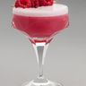 |
Clover Club clover_club pink CC-BY-SA-3.0 · Ralf Roletschek |
sourfruity | springsummer | date_nightpartyclassic | gin medium · 16.0% · alcoholic diff 3 · coupe · shaken |
45 ml Gin; 15 ml Raspberry syrup; 15 ml Lemon juice; 15 ml Egg white |
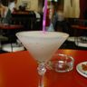 |
Daiquiri daiquiri pale yellow CC-BY-2.0 · Mike Fleming from London, England |
sourfruity | summer | partyclassic | rum_white strong · 20.2% · alcoholic diff 2 · coupe · shaken |
60 ml White rum; 20 ml Lime juice; 15 ml Simple syrup |
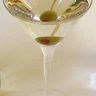 |
Dry Martini dry_martini clear Public-Domain · Dry_Martini.jpg: Original uploader was Hayford Peirce at en. |
spirit_forwardherbal | all_year | aperitifdate_nightclassic | gin strong · 30.6% · alcoholic diff 1 · martini · stirred |
60 ml Gin; 10 ml Dry vermouth |
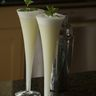 |
Gin Fizz gin_fizz cloudy white CC-BY-SA-2.0 · mkorcuska |
sourbubbly | springsummer | brunchaperitifclassic | gin light · 9.9% · alcoholic diff 2 · highball · shaken |
45 ml Gin; 30 ml Lemon juice; 10 ml Simple syrup; top: Soda water |
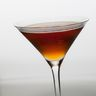 |
Hanky Panky hanky_panky dark amber CC-BY-SA-2.0 · Tim Sackton from Somerville, MA |
spirit_forwardbitterherbal | fallwinter | nightcapclassic | gin strong · 24.0% · alcoholic diff 1 · coupe · stirred |
45 ml Gin; 45 ml Sweet (red) vermouth; 7.5 ml Fernet-Branca |
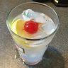 |
John Collins john_collins pale yellow CC-BY-SA-2.0 · Michael Styne from Averill Park, NY, USA |
sourbubbly | summer | partybrunchclassic | gin medium · 10.9% · alcoholic diff 1 · collins · built |
45 ml Gin; 30 ml Lemon juice; 15 ml Simple syrup; top: Soda water |
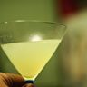 |
Last Word last_word pale green CC-BY-SA-2.0 · Don LaVange |
sourherbalsweet | all_year | date_nightclassic | ginliqueur strong · 25.4% · alcoholic diff 2 · coupe · shaken |
22.5 ml Gin; 22.5 ml Green Chartreuse; 22.5 ml Maraschino liqueur; 22.5 ml Lime juice |
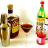 |
Manhattan manhattan deep amber Public-Domain · Hayford Peirce at English Wikipedia |
spirit_forwardsweet | fallwinter | nightcapdate_nightclassic | whiskey_rye strong · 30.7% · alcoholic diff 1 · coupe · stirred |
50 ml Rye whiskey; 20 ml Sweet (red) vermouth; 1 dash Angostura bitters |
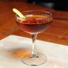 |
Martinez martinez amber red CC-BY-SA-3.0 · Will Shenton |
spirit_forwardsweetherbal | fallwinter | nightcapclassic | gin strong · 23.5% · alcoholic diff 1 · coupe · stirred |
45 ml London dry or Old Tom gin; 45 ml Sweet (red) vermouth; 1 barspoon Maraschino liqueur; 2 dash Orange bitters |
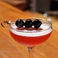 |
Mary Pickford mary_pickford pink CC-BY-SA-3.0 · Will Shenton |
fruitysweet | summer | partyclassic | rum_white medium · 15.9% · alcoholic diff 2 · coupe · shaken |
45 ml White rum; 45 ml Pineapple juice; 7.5 ml Maraschino liqueur; 5 ml Grenadine |
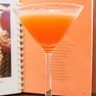 |
Monkey Gland monkey_gland orange CC-BY-SA-2.0 · Adrian Scottow from London, England |
fruitysweetherbal | spring | brunchclassic | gin medium · 16.0% · alcoholic diff 2 · coupe · shaken |
45 ml Gin; 45 ml Orange juice; 1 barspoon Absinthe; 10 ml Grenadine |
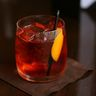 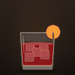 |
Negroni negroni red CC-BY-2.0 · Geoff Peters from Vancouver, BC, Canada |
bitterspirit_forwardherbal | all_year | aperitifclassic | ginamaro_aperitif strong · 22.5% · alcoholic diff 1 · rocks · stirred |
30 ml Gin; 30 ml Campari; 30 ml Sweet (red) vermouth |
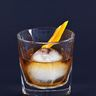 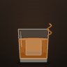 |
Old Fashioned old_fashioned amber CC-BY-SA-4.0 · Erich Wagner (www.eventografie.de) |
spirit_forwardbittersweet | fallwinter | nightcapclassic | whiskey_bourbon strong · 31.0% · alcoholic diff 1 · rocks · stirred |
45 ml Bourbon or rye whiskey; 1 cube Sugar cube; 3 dash Angostura bitters; 10 ml Splash of water |
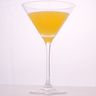 |
Paradise paradise orange CC-BY-2.0 · Stuart Webster from Southampton, England |
fruitysweet | springsummer | brunchpartyclassic | gin strong · 20.7% · alcoholic diff 2 · coupe · shaken |
30 ml Gin; 20 ml Apricot brandy (liqueur); 15 ml Orange juice |
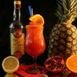 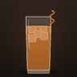 |
Planter's Punch planters_punch amber CC-BY-SA-3.0-DE · Achim Schleuning (E-Mail: comander02_de@yahoo.de) |
fruitysweetsour | summer | partyclassic | rum_dark medium · 16.0% · alcoholic diff 2 · highball · shaken |
45 ml Jamaican rum; 15 ml Lime juice; 30 ml Cane syrup; top: Soda water to lengthen (optional) (opt) |
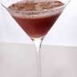 |
Porto Flip porto_flip ruby CC-BY-2.0 · Stuart Webster |
creamysweet | winterholiday | after_dinnernightcapclassic | brandy_cognacwine medium · 17.1% · alcoholic diff 3 · nick_and_nora · shaken |
15 ml Brandy; 45 ml Tawny or ruby port; 10 ml Egg yolk |
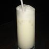 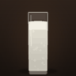 |
Ramos Fizz ramos_fizz cream CC-BY-SA-3.0 · Infrogmation of New Orleans |
creamysourbubbly | spring | brunchclassic | gin light · 5.6% · alcoholic diff 3 · collins · shaken |
45 ml Gin; 15 ml Lime juice; 15 ml Lemon juice; 30 ml Simple syrup; 60 ml Cream; 30 ml Egg white; 3 dash Orange flower water; 2 dash Vanilla extract (2 drops); top: Soda water |
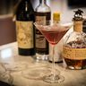 |
Remember the Maine remember_the_maine deep red CC-BY-SA-2.0 · Adrian Scottow |
spirit_forwardherbalsweet | fallwinter | nightcapclassic | whiskey_rye strong · 30.7% · alcoholic diff 1 · coupe · stirred |
60 ml Rye whiskey; 22.5 ml Sweet (red) vermouth; 15 ml Cherry liqueur (Cherry Heering); 7.5 ml Absinthe |
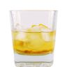 |
Rusty Nail rusty_nail amber CC-BY-SA-4.0 · Craberoid |
spirit_forwardsweetherbal | winter | nightcapafter_dinnerclassic | whiskey_scotch strong · 36.4% · alcoholic diff 1 · rocks · built |
45 ml Scotch whisky; 25 ml Drambuie |
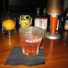 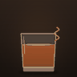 |
Sazerac sazerac amber CC-BY-SA-3.0 · Infrogmation of New Orleans |
spirit_forwardherbal | fallwinter | nightcapclassic | brandy_cognac strong · 33.5% · alcoholic diff 3 · rocks · stirred |
50 ml Cognac (or rye whiskey); 10 ml Absinthe; 1 cube Sugar cube; 2 dash Peychaud's bitters |
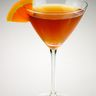 |
Sidecar sidecar amber CC-BY-2.0 · Evan Swigart from Chicago, USA |
sourfruityspirit_forward | fallwinter | date_nightclassic | brandy_cognac strong · 24.9% · alcoholic diff 2 · coupe · shaken |
50 ml Cognac or brandy; 20 ml Triple sec; 20 ml Lemon juice; pinch: Sugar for the rim (optional) (opt) |
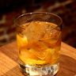 |
Stinger stinger amber CC-BY-SA-3.0 · Will Shenton |
spirit_forwardherbalsweet | winter | after_dinnernightcapclassic | brandy_cognac strong · 29.8% · alcoholic diff 1 · coupe · stirred |
50 ml Cognac or brandy; 20 ml White crème de menthe |
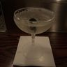 |
Tuxedo tuxedo clear CC-BY-4.0 · BanjoZebra |
spirit_forwardherbal | all_year | aperitifclassic | gin strong · 24.3% · alcoholic diff 1 · coupe · stirred |
30 ml Old Tom gin; 30 ml Dry vermouth; 0.5 barspoon Maraschino liqueur; 0.25 barspoon Absinthe; 3 dash Orange bitters |
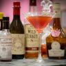 |
Vieux Carré vieux_carre deep amber CC-BY-SA-2.0 · Adrian Scottow |
spirit_forwardsweetherbal | fallwinter | nightcapclassic | whiskey_ryebrandy_cognac strong · 28.3% · alcoholic diff 1 · coupe · stirred |
30 ml Rye whiskey; 30 ml Cognac or brandy; 30 ml Sweet (red) vermouth; 1 barspoon Bénédictine; 2 dash Peychaud's bitters |
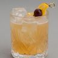 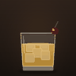 |
Whiskey Sour whiskey_sour amber CC-BY-SA-3.0 · Ralf Roletschek |
soursweet | fallall_year | date_nightclassic | whiskey_bourbon medium · 18.0% · alcoholic diff 2 · rocks · shaken |
45 ml Bourbon; 25 ml Lemon juice; 20 ml Simple syrup; 20 ml Egg white (opt); 3 dash Angostura bitters (opt) |
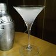 |
White Lady white_lady cloudy white CC-BY-SA-3.0 · Momoji3 |
sourfruity | spring | aperitifdate_nightclassic | ginliqueur strong · 24.9% · alcoholic diff 2 · coupe · shaken |
40 ml Gin; 30 ml Triple sec; 20 ml Lemon juice |
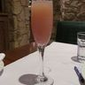 |
Bellini bellini peach CC-BY-SA-3.0 · John Phelan |
fruitybubblysweet | summerspring | brunchclassic | wine_sparkling light · 8.0% · low_abv diff 2 · flute · built |
50 ml White peach purée; top: Prosecco |
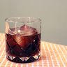 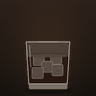 |
Black Russian black_russian dark brown CC-BY-SA-3.0 · Will Shenton |
coffeesweetspirit_forward | fallwinter | after_dinnernightcapclassic | vodka strong · 31.2% · alcoholic diff 1 · rocks · built |
50 ml Vodka; 20 ml Coffee liqueur |
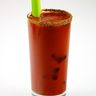 |
Bloody Mary bloody_mary tomato red CC-BY-2.0 · Evan Swigart from Chicago, USA |
spicysour | all_year | brunchclassic | vodka medium · 10.7% · alcoholic diff 2 · highball · built |
45 ml Vodka; 90 ml Tomato juice; 15 ml Lemon juice; 2 dash Worcestershire sauce; 2 dash Hot sauce (Tabasco); pinch: Celery salt; pinch: Black pepper |
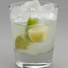 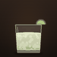 |
Caipirinha caipirinha pale green CC-BY-SA-3.0 · Ralf Roletschek |
sourfruity | summer | partyclassic | cachaca strong · 26.1% · alcoholic diff 2 · rocks · muddled_built |
60 ml Cachaça; 1 piece 1 lime, cut into small wedges; 4 tsp White cane sugar |
| Cardinale cardinale pink red generated icon |
bitterspirit_forwardherbal | all_year | aperitifclassic | gin strong · 26.1% · alcoholic diff 1 · coupe · stirred |
40 ml Gin; 20 ml Dry vermouth; 10 ml Campari | |
| Champagne Cocktail champagne_cocktail pale gold generated icon |
bubblybittersweet | holidayall_year | partydate_nightclassic | wine_sparkling medium · 15.3% · alcoholic diff 1 · flute · built |
1 cube Sugar cube; 2 dash Angostura bitters; 10 ml Cognac or brandy; 1 dash Grand Marnier (opt); top: Chilled Champagne | |
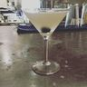 |
Corpse Reviver #2 corpse_reviver_2 pale yellow CC-BY-2.0 · charlene mcbride |
sourherbalfruity | all_year | brunchaperitifclassic | ginliqueur medium · 19.6% · alcoholic diff 2 · coupe · shaken |
30 ml Gin; 30 ml Cointreau; 30 ml Lillet Blanc; 30 ml Lemon juice; 1 dash Absinthe |
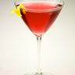 |
Cosmopolitan cosmopolitan pink CC-BY-2.0 · TheCulinaryGeek from Chicago, USA |
fruitysour | all_year | partydate_nightclassic | vodka medium · 17.6% · alcoholic diff 2 · martini · shaken |
40 ml Citrus vodka; 15 ml Cointreau; 15 ml Lime juice; 30 ml Cranberry juice |
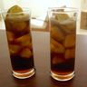 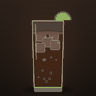 |
Cuba Libre cuba_libre cola brown CC-BY-SA-2.0 · Martin Belam (currybet) |
sweetbubbly | summer | partyclassic | rum_white medium · 10.1% · alcoholic diff 1 · highball · built |
50 ml White rum; 10 ml Lime juice; top: Cola |
| French 75 french_75 pale gold CC-BY-SA-2.0 · https://www.flickr.com/people/garyjwood/ |
bubblysour | holidayspring | brunchpartyclassic | ginwine_sparkling medium · 12.8% · alcoholic diff 2 · flute · shaken |
30 ml Gin; 15 ml Lemon juice; 15 ml Simple syrup; top: Champagne | |
| French Connection french_connection amber CC-BY-SA-4.0 · Arnaud 25 |
sweetspirit_forward | winter | after_dinnernightcapclassic | brandy_cognacliqueur strong · 29.1% · alcoholic diff 1 · rocks · built |
35 ml Cognac or brandy; 35 ml Amaretto | |
| Garibaldi garibaldi orange red CC-BY-4.0 · User:BanjoZebra |
bitterfruity | springsummer | aperitifbrunchclassic | amaro_aperitif light · 6.2% · low_abv diff 1 · highball · built |
45 ml Campari; 120 ml Fresh orange juice (whisked or blended until fluffy) | |
| Grasshopper grasshopper mint green CC-BY-SA-3.0 · TexasDex |
creamysweetherbal | holidayspring | after_dinnerclassic | liqueur medium · 13.3% · alcoholic diff 2 · coupe · shaken |
20 ml Green crème de menthe; 20 ml White crème de cacao; 20 ml Cream | |
| Hemingway Special hemingway_special pale pink CC-BY-SA-3.0-DE · Achim Schleuning (E-Mail: comander02_de@yahoo.de) |
sourfruity | summer | partyclassic | rum_white medium · 17.7% · alcoholic diff 2 · coupe · shaken |
60 ml White rum; 40 ml Grapefruit juice; 15 ml Maraschino liqueur; 15 ml Lime juice | |
| Horse's Neck horses_neck pale amber CC-BY-SA-3.0 · Plume.janvier |
bubblyspicy | all_year | aperitifclassic | brandy_cognac light · 9.1% · alcoholic diff 1 · highball · built |
40 ml Cognac or brandy; top: Ginger ale; 1 dash Angostura bitters (opt) | |
| Irish Coffee irish_coffee brown CC-BY-2.0 · David Jackmanson |
coffeecreamysweet | winterholiday | after_dinnernightcapclassic | whiskey_irish light · 8.9% · alcoholic diff 2 · irish_coffee_mug · hot |
50 ml Irish whiskey; 120 ml Hot strong coffee; 1 tsp Brown sugar; 50 ml Lightly whipped cream | |
| Kir kir rosé generated icon |
fruity | springsummer | aperitifclassic | wine medium · 12.8% · alcoholic diff 1 · wine · built |
10 ml Crème de cassis; top: Chilled dry white wine | |
| Lemon Drop Martini lemon_drop_martini pale yellow CC-BY-2.0 · Schezar from New York City, USA |
soursweetfruity | spring | partyclassic | vodkaliqueur strong · 24.6% · alcoholic diff 2 · martini · shaken |
30 ml Vodka; 20 ml Triple sec; 15 ml Lemon juice; pinch: Sugar for the rim (optional) (opt) | |
| Long Island Iced Tea long_island_iced_tea iced-tea brown CC-BY-2.0 · Alisdair McDiarmid from Glasgow, United Kingdom |
sweetsourspirit_forwardbubbly | summer | partyclassic | vodkatequila medium · 16.0% · alcoholic diff 2 · collins · built |
15 ml Vodka; 15 ml Blanco tequila; 15 ml White rum; 15 ml Gin; 15 ml Triple sec; 25 ml Lemon juice; 30 ml Simple syrup; top: Cola | |
| Mai Tai mai_tai amber CC-BY-SA-2.0 · Johnny Silvercloud |
fruitysweetsour | summer | partyclassic | rum_whiterum_dark strong · 20.7% · alcoholic diff 2 · double_rocks · shaken |
30 ml Aged Jamaican rum; 30 ml Martinique rhum agricole (or another aged rum); 15 ml Orange curaçao; 15 ml Orgeat (almond syrup); 30 ml Lime juice; 7.5 ml Simple syrup | |
| Margarita margarita pale green CC-BY-SA-3.0 · Ralf Roletschek |
sourfruity | summerspring | partyclassic | tequila strong · 26.4% · alcoholic diff 2 · coupe · shaken |
50 ml Blanco tequila; 20 ml Triple sec (e.g. Cointreau); 15 ml Lime juice; pinch: Salt for the rim (opt) | |
| Mimosa mimosa orange CC-BY-2.0 · vxla |
fruitybubbly | springsummerholiday | brunchpartyclassic | wine_sparkling light · 6.0% · low_abv diff 1 · flute · built |
75 ml Fresh orange juice, chilled; 75 ml Prosecco or Champagne, chilled | |
| Mint Julep mint_julep amber CC-BY-SA-4.0 · Erich Wagner (www.eventografie.de) |
spirit_forwardherbalsweet | springsummer | partyclassic | whiskey_bourbon strong · 31.3% · alcoholic diff 2 · double_rocks · muddled_built |
60 ml Bourbon; 4 piece Mint sprigs (leaves only); 1 tsp Powdered sugar; 10 ml 2 tsp water | |
| Mojito mojito pale green CC-BY-SA-4.0 · Raimonsocial |
sourherbalbubbly | summer | partyclassic | rum_white medium · 11.6% · alcoholic diff 2 · highball · muddled_built |
45 ml White rum; 20 ml Lime juice; 6 piece Mint sprigs; 2 tsp White cane sugar; top: Soda water | |
| Moscow Mule moscow_mule pale gold CC-BY-SA-2.0 · edseloh |
spicybubblysour | summerall_year | partyclassic | vodka light · 9.4% · alcoholic diff 1 · copper_mug · built |
45 ml Vodka; 10 ml Lime juice; top: Ginger beer | |
| Piña Colada pina_colada cream Public-Domain · User Barmix on de.wikipedia |
creamyfruitysweet | summer | partyclassic | rum_white medium · 11.8% · alcoholic diff 2 · hurricane · blended |
50 ml White rum; 30 ml Cream of coconut; 50 ml Pineapple juice | |
| Pisco Sour pisco_sour pale cream CC-BY-SA-4.0 · Dtarazona |
sourfruity | all_year | aperitifpartyclassic | pisco medium · 14.1% · alcoholic diff 3 · coupe · shaken |
60 ml Pisco; 30 ml Lemon juice; 20 ml Simple syrup; 30 ml 1 egg white; 3 dash Amargo or Angostura bitters | |
| Rabo de Galo rabo_de_galo red amber generated icon |
spirit_forwardbitterherbal | all_year | aperitifnightcapclassic | cachaca strong · 26.0% · alcoholic diff 1 · rocks · stirred |
60 ml Cachaça; 20 ml Sweet (red) vermouth; 15 ml Cynar; 2 dash Angostura bitters (opt) | |
| Sea Breeze sea_breeze pink CC-BY-2.0 · Wendy from Minneapolis, MN |
fruitysour | summer | partyclassic | vodka light · 7.7% · alcoholic diff 1 · highball · built |
40 ml Vodka; 120 ml Cranberry juice; 30 ml Grapefruit juice | |
| Sex on the Beach sex_on_the_beach sunset orange CC-BY-2.0 · Sandor Diego Weijn |
fruitysweet | summer | partyclassic | vodka medium · 13.0% · alcoholic diff 1 · highball · built |
40 ml Vodka; 20 ml Peach schnapps; 40 ml Orange juice; 40 ml Cranberry juice | |
| Singapore Sling singapore_sling pink CC-BY-SA-4.0 · Achim Schleuning (E-Mail: comander02_de@yahoo.de) |
fruitysweetherbal | summer | partyclassic | ginliqueur light · 8.5% · alcoholic diff 3 · collins · shaken |
30 ml Gin; 15 ml Cherry liqueur (Cherry Heering); 7.5 ml Cointreau; 7.5 ml Bénédictine; 120 ml Pineapple juice; 15 ml Lime juice; 10 ml Grenadine; 1 dash Angostura bitters | |
| Tequila Sunrise tequila_sunrise layered orange CC-BY-2.0 · TheCulinaryGeek from Chicago, USA |
fruitysweet | summer | brunchpartyclassic | tequila medium · 10.9% · alcoholic diff 1 · highball · built |
45 ml Blanco tequila; 90 ml Orange juice; 15 ml Grenadine | |
| Vesper vesper clear CC-BY-SA-4.0 · Matthias Friedlein (www.augustine-bar.de) |
spirit_forwardherbal | all_year | date_nightaperitifclassic | gin strong · 30.0% · alcoholic diff 2 · martini · shaken |
45 ml Gin; 15 ml Vodka; 7.5 ml Lillet Blanc | |
| Zombie zombie dark amber CC-BY-SA-3.0 · Magnetic Rag |
fruityspirit_forwardspicy | summer | partyclassic | rum_dark strong · 25.0% · alcoholic diff 3 · tiki · blended |
45 ml Jamaican dark rum; 45 ml Gold Puerto Rican rum; 30 ml Demerara rum (151-proof in the original); 20 ml Lime juice; 15 ml Falernum; 10 ml Grapefruit juice (part of Donn's mix); 5 ml Cinnamon syrup (part of Donn's mix); 1 tsp Grenadine; 1 dash Angostura bitters; 1 dash Absinthe or Pernod (6 drops) | |
| Bee's Knees bees_knees pale gold CC-BY-SA-3.0 · Will Shenton |
soursweet | springsummer | brunchdate_nightclassic | gin medium · 15.6% · alcoholic diff 2 · coupe · shaken |
52.5 ml Gin; 10 ml Honey syrup (2 tsp); 22.5 ml Lemon juice; 22.5 ml Orange juice | |
| Bramble bramble blackberry CC-BY-SA-4.0 · Erich Wagner (www.eventografie.de) |
fruitysour | summerfall | partyclassic | gin medium · 18.0% · alcoholic diff 2 · rocks · shaken |
50 ml Gin; 25 ml Lemon juice; 12.5 ml Simple syrup; 15 ml Crème de mûre (blackberry liqueur) | |
| Canchánchara canchanchara pale gold CC-BY-2.0 · Miriam Gómez Blanes |
soursweet | summer | partyclassic | rum_white medium · 15.6% · alcoholic diff 1 · rocks · built |
60 ml Cuban aguardiente (or white rum); 15 ml Lime juice; 15 ml Raw honey; 50 ml Water | |
| Chartreuse Swizzle chartreuse_swizzle pale green CC-BY-SA-4.0 · Tim069 |
herbalfruitysour | summer | partyclassic | liqueur strong · 21.3% · alcoholic diff 1 · collins · built |
45 ml Green Chartreuse; 30 ml Pineapple juice; 22.5 ml Lime juice; 15 ml Falernum | |
| Dark 'n' Stormy dark_n_stormy layered amber CC-BY-SA-3.0 · Will Shenton |
spicybubbly | all_year | partyclassic | rum_dark medium · 13.6% · alcoholic diff 2 · highball · built |
100 ml Ginger beer; 60 ml Dark rum (Gosling's Black Seal is traditional) | |
| Don's Special Daiquiri dons_special_daiquiri golden generated icon |
fruitysoursweet | summer | partyclassic | rum_dark medium · 16.0% · alcoholic diff 2 · coupe · shaken |
30 ml Gold Jamaican rum; 15 ml Cuban-style white rum; 15 ml Passion fruit syrup; 15 ml Lime juice; 15 ml Honey syrup | |
| Espresso Martini espresso_martini dark brown CC-BY-SA-2.0 · Ewan Munro from London, UK |
coffeesweetbitter | all_year | after_dinnerpartyclassic | vodka medium · 17.3% · alcoholic diff 2 · martini · shaken |
50 ml Vodka; 30 ml Coffee liqueur; 30 ml Fresh espresso, cooled slightly; 10 ml Simple syrup (to taste) | |
| Fernandito fernandito cola brown CC-BY-SA-3.0 · Will Shenton |
bitterherbalbubbly | all_year | partyclassic | amaro_aperitif light · 8.9% · low_abv diff 1 · highball · built |
50 ml Fernet-Branca; top: Cola | |
| French Martini french_martini pink CC-BY-SA-3.0 · Brown-Forman Corporation |
fruitysweet | all_year | partydate_nightclassic | vodka strong · 21.8% · alcoholic diff 2 · martini · shaken |
45 ml Vodka; 15 ml Raspberry liqueur (Chambord); 15 ml Pineapple juice | |
| Gin Basil Smash gin_basil_smash basil green CC-BY-SA-4.0 · Erich Wagner (www.eventografie.de) |
herbalsour | summer | partyclassic | gin medium · 18.3% · alcoholic diff 2 · rocks · shaken |
10 leaf Fresh basil; 60 ml Gin; 22.5 ml Lemon juice; 22.5 ml Simple syrup | |
| Grand Margarita grand_margarita amber generated icon |
sourfruityspirit_forward | summer | partydate_nightclassic | tequilaliqueur strong · 26.7% · alcoholic diff 2 · coupe · shaken |
45 ml Blanco tequila; 30 ml Grand Marnier; 15 ml Lime juice | |
| IBA Tiki iba_tiki golden CC0-1.0 · Adanicklmao |
fruitysweetspicy | summer | partyclassic | rum_dark medium · 10.0% · alcoholic diff 3 · tiki · shaken |
1 piece Slice of fresh ginger; 30 ml Aged Cuban rum; 30 ml Smoky aged rum; 15 ml Amaretto; 5 ml Hazelnut liqueur (Frangelico); 1 dash Maraschino (5 drops); 30 ml Passion fruit purée; 90 ml Pineapple juice; 30 ml Lime juice | |
| Illegal illegal pale yellow CC-BY-4.0 · BanjoZebra |
smokysourfruity | summer | partyclassic | mezcalrum_dark medium · 19.7% · alcoholic diff 2 · coupe · shaken |
30 ml Mezcal; 15 ml Jamaican overproof white rum; 15 ml Falernum; 1 barspoon Maraschino liqueur; 22.5 ml Lime juice; 15 ml Simple syrup; 15 ml Egg white (opt) | |
| Jungle Bird jungle_bird ruby amber CC-BY-4.0 · BanjoZebra |
bitterfruitysweet | summer | partyclassic | rum_dark medium · 13.3% · alcoholic diff 2 · rocks · shaken |
45 ml Blackstrap or dark Jamaican rum; 22.5 ml Campari; 45 ml Pineapple juice; 15 ml Lime juice; 15 ml Demerara syrup | |
| Missionary's Downfall missionarys_downfall pale green CC-BY-4.0 · BanjoZebra |
fruityherbalsweet | summer | partyclassic | rum_white medium · 12.8% · alcoholic diff 2 · coupe · blended |
30 ml White rum; 15 ml Peach brandy (liqueur); 15 ml Lime juice; 30 ml Honey syrup; 10 leaf Fresh mint; 4 piece Fresh pineapple chunks | |
| Naked and Famous naked_and_famous coral CC-BY-4.0 · Rascalisimo |
smokysourherbal | all_year | partydate_nightclassic | mezcalliqueur medium · 18.6% · alcoholic diff 2 · coupe · shaken |
22.5 ml Mezcal; 22.5 ml Yellow Chartreuse; 22.5 ml Aperol; 22.5 ml Lime juice | |
| New York Sour new_york_sour layered red CC-BY-SA-4.0 · Corvus |
sourspirit_forwardfruity | fallwinter | date_nightclassic | whiskey_rye medium · 18.2% · alcoholic diff 2 · rocks · shaken |
60 ml Rye whiskey or bourbon; 30 ml Lemon juice; 22.5 ml Simple syrup; 15 ml Egg white (opt); 15 ml Dry red wine (Shiraz or Malbec) | |
| Old Cuban old_cuban pale gold CC-BY-SA-2.0 · Edsel Little |
bubblyherbalsour | holidayall_year | partyclassic | rum_dark medium · 13.0% · alcoholic diff 2 · coupe · shaken |
7 leaf Fresh mint; 45 ml Aged (gold) rum; 22.5 ml Lime juice; 30 ml Simple syrup; 2 dash Angostura bitters; top: Brut Champagne or prosecco | |
| Paloma paloma pink grapefruit Public-Domain · Antonio Cavallo |
sourfruitybubbly | summer | partyclassic | tequila medium · 11.7% · alcoholic diff 1 · highball · built |
50 ml Blanco tequila; 5 ml Lime juice; pinch: Salt; top: Pink grapefruit soda | |
| Paper Plane paper_plane orange CC-BY-4.0 · Missvain |
bittersourfruity | all_year | partyclassic | whiskey_bourbonamaro_aperitif medium · 18.2% · alcoholic diff 2 · coupe · shaken |
30 ml Bourbon; 30 ml Amaro Nonino; 30 ml Aperol; 30 ml Lemon juice | |
| Penicillin penicillin golden CC-BY-SA-2.0 · Edsel Little |
smokyspicysour | fallwinter | nightcapclassic | whiskey_scotch medium · 19.4% · alcoholic diff 2 · rocks · shaken |
3 piece 2-3 thin slices of fresh ginger; 60 ml Blended Scotch whisky; 22.5 ml Lemon juice; 22.5 ml Honey syrup; 7.5 ml Peated Islay Scotch (e.g. Lagavulin) | |
| Pisco Punch pisco_punch pale gold CC-BY-SA-2.0 · Ministerio de Relaciones Exteriores |
fruitysour | summer | partyclassic | pisco medium · 15.5% · alcoholic diff 2 · wine · shaken |
3 piece Whole cloves; 60 ml Pisco; 22.5 ml Pineapple juice; 15 ml Simple syrup; 15 ml Lemon juice; 30 ml Dry white wine | |
| Porn Star Martini porn_star_martini passion fruit yellow CC-BY-SA-4.0 · DobbAY |
fruitysweet | all_year | partyclassic | vodka medium · 13.6% · alcoholic diff 2 · coupe · shaken |
50 ml Vanilla vodka; 20 ml Passion fruit liqueur; 50 ml Passion fruit purée; 10 ml Vanilla syrup (or 2 bar spoons vanilla sugar); 50 ml Champagne, served on the side | |
| Russian Spring Punch russian_spring_punch berry pink CC-BY-2.0 · charlene mcbride |
fruitybubblysour | spring | partybrunchclassic | vodkawine_sparkling medium · 12.0% · alcoholic diff 2 · highball · shaken |
25 ml Vodka; 25 ml Lemon juice; 15 ml Crème de cassis; 10 ml Simple syrup; top: Sparkling wine (Champagne | |
| Sherry Cobbler sherry_cobbler amber CC-BY-4.0 · BanjoZebra |
fruitysweet | summer | brunchaperitifclassic | wine medium · 12.9% · alcoholic diff 2 · collins · shaken |
90 ml Amontillado sherry (or half palo cortado); 1 tsp Sugar; 1 piece Half an orange wheel; 1 piece Half a lemon wheel | |
| South Side south_side pale green CC-BY-2.0 · davidgiesberg |
herbalsour | summer | brunchpartyclassic | gin medium · 18.3% · alcoholic diff 2 · coupe · shaken |
60 ml Gin; 30 ml Lemon juice; 15 ml Simple syrup; 6 leaf Fresh mint; 15 ml Egg white (opt) | |
| Spicy Fifty spicy_fifty pale yellow CC0-1.0 · LittleT889 |
spicysweetsour | all_year | partyclassic | vodka medium · 16.7% · alcoholic diff 2 · martini · shaken |
50 ml Vanilla vodka; 15 ml Elderflower cordial; 15 ml Lime juice; 10 ml Honey syrup; 2 piece 2 thin slices of red chili | |
| Spritz spritz orange CC-BY-SA-2.0-DE · Daniel 13:47, 21. Jul. 2008 (CEST) |
bitterbubblyfruity | summerspring | aperitifbrunchclassic | wine_sparklingamaro_aperitif light · 8.8% · low_abv diff 1 · wine · built |
90 ml Prosecco; 60 ml Aperol; top: Splash of soda water | |
| Suffering Bastard suffering_bastard pale amber CC-BY-SA-3.0 · Will Shenton |
spicybubblysour | all_year | partyclassic | brandy_cognacgin medium · 11.9% · alcoholic diff 2 · collins · shaken |
30 ml Cognac or brandy; 30 ml Gin; 15 ml Lime juice; 2 dash Angostura bitters; top: Ginger beer | |
| Three Dots and a Dash three_dots_and_a_dash amber CC-BY-4.0 · BanjoZebra |
fruityspicysweet | summerholiday | partyclassic | rum_white medium · 20.0% · alcoholic diff 3 · tiki · blended |
45 ml Rhum agricole; 15 ml Blended aged rum; 7.5 ml Falernum; 7.5 ml Allspice dram; 15 ml Lime juice; 15 ml Orange juice; 15 ml Honey syrup; 2 dash Angostura bitters | |
| Tipperary tipperary amber CC-BY-4.0 · BanjoZebra |
spirit_forwardherbalsweet | fallwinter | nightcapclassic | whiskey_irish strong · 30.0% · alcoholic diff 1 · coupe · stirred |
50 ml Irish whiskey; 25 ml Sweet (red) vermouth; 15 ml Green Chartreuse; 2 dash Angostura bitters | |
| Tommy's Margarita tommys_margarita pale gold CC-BY-2.0 · Rick Audet |
soursweet | summer | partyclassic | tequila medium · 16.0% · alcoholic diff 2 · rocks · shaken |
60 ml 100% agave blanco tequila; 30 ml Lime juice; 30 ml Agave syrup | |
| Trinidad Sour trinidad_sour deep red CC-BY-SA-2.0 · Edsel Little |
bitterspicysour | fallwinter | nightcapclassic | whiskey_rye medium · 19.1% · alcoholic diff 2 · coupe · shaken |
45 ml Angostura bitters (yes, 45 ml); 30 ml Orgeat (almond syrup); 22.5 ml Lemon juice; 15 ml Rye whiskey | |
| Ve.n.to ve_n_to pale straw CC-BY-SA-4.0 · Jonsico |
herbalsoursweet | spring | aperitifclassic | brandy_cognac medium · 14.8% · alcoholic diff 3 · rocks · shaken |
45 ml Grappa; 22.5 ml Lemon juice; 15 ml Honey syrup (made with chamomile tea); 15 ml Chamomile syrup; 15 ml Egg white (opt) | |
| Gimlet gimlet pale green CC-BY-2.0 · The Delicious Life |
soursweet | summer | aperitifparty | gin medium · 19.7% · alcoholic diff 2 · coupe · shaken |
60 ml Gin; 22.5 ml Lime juice; 15 ml Simple syrup | |
| Tom Collins tom_collins pale yellow CC-BY-SA-2.0 · cyclonebill |
sourbubbly | summer | partybrunch | gin light · 9.6% · alcoholic diff 2 · collins · shaken |
45 ml Old Tom gin (or London dry); 30 ml Lemon juice; 15 ml Simple syrup; top: Soda water | |
| Gin and Tonic gin_and_tonic clear CC-BY-SA-3.0 · NotFromUtrecht |
bubblyherbalbitter | summerall_year | aperitifparty | gin light · 9.1% · alcoholic diff 1 · highball · built |
50 ml Gin; top: Tonic water | |
| Gibson gibson clear CC-BY-2.0 · SteveR- |
spirit_forwardherbal | all_year | aperitif | gin strong · 30.6% · alcoholic diff 1 · martini · stirred |
60 ml Gin; 10 ml Dry vermouth | |
| Dirty Martini dirty_martini cloudy CC-BY-2.0 · Evan Swigart from Chicago, USA |
spirit_forward | all_year | aperitifdate_night | gin strong · 26.8% · alcoholic diff 1 · martini · stirred |
60 ml Gin or vodka; 10 ml Dry vermouth; 10 ml Olive brine | |
| Bronx bronx orange CC-BY-2.0 · Stuart Webster |
fruityherbal | spring | brunch | gin medium · 18.1% · alcoholic diff 2 · coupe · shaken |
30 ml Gin; 15 ml Sweet (red) vermouth; 15 ml Dry vermouth; 15 ml Orange juice | |
| Gin Rickey gin_rickey clear CC-BY-2.0 · Scott Veg |
sourbubbly | summer | aperitif | gin medium · 11.2% · alcoholic diff 1 · highball · built |
60 ml Gin; 15 ml Lime juice; top: Soda water | |
| Pegu Club pegu_club pale orange CC-BY-SA-4.0 · Paxsimius |
sourfruity | summer | aperitif | gin strong · 26.2% · alcoholic diff 2 · coupe · shaken |
45 ml Gin; 22.5 ml Orange curaçao; 15 ml Lime juice; 1 dash Angostura bitters; 1 dash Orange bitters | |
| Bijou bijou amber CC-BY-SA-2.0 · Chris Palmer from San Diego |
herbalspirit_forwardsweet | fallwinter | nightcap | ginliqueur strong · 30.8% · alcoholic diff 1 · coupe · stirred |
30 ml Gin; 30 ml Sweet (red) vermouth; 30 ml Green Chartreuse; 1 dash Orange bitters | |
| Sloe Gin Fizz sloe_gin_fizz plum pink generated icon |
fruitysourbubbly | fallspring | brunch | liqueur light · 6.8% · low_abv diff 2 · highball · shaken |
45 ml Sloe gin; 22.5 ml Lemon juice; 10 ml Simple syrup; top: Soda water | |
| Breakfast Martini breakfast_martini orange CC-BY-2.0 · popvoid |
fruitysourbitter | springall_year | brunch | gin strong · 24.5% · alcoholic diff 2 · martini · shaken |
50 ml Gin; 15 ml Triple sec; 15 ml Lemon juice; 1 barspoon Orange marmalade | |
| Hugo Spritz hugo_spritz pale straw CC-BY-SA-3.0 · Ralf Roletschek |
bubblyherbalfruity | springsummer | aperitifbrunch | wine_sparkling light · 7.0% · low_abv diff 1 · wine · built |
4 leaf Fresh mint; 20 ml Elderflower cordial (or liqueur); 90 ml Prosecco; top: Soda water | |
| Negroni Sbagliato negroni_sbagliato red CC-BY-2.0 · Wine Dharma |
bitterbubbly | all_year | aperitif | amaro_aperitif medium · 14.8% · alcoholic diff 1 · rocks · built |
30 ml Campari; 30 ml Sweet (red) vermouth; top: Prosecco | |
| Kir Royale kir_royale ruby pink generated icon |
fruitybubbly | holiday | partyaperitif | wine_sparkling medium · 12.6% · alcoholic diff 1 · flute · built |
10 ml Crème de cassis; top: Champagne | |
| Rossini rossini strawberry CC-BY-2.0 · Luca Conti from Senigallia, Italy |
fruitybubbly | springsummer | brunch | wine_sparkling light · 8.0% · low_abv diff 2 · flute · built |
50 ml Strawberry purée; top: Prosecco | |
| Death in the Afternoon death_in_the_afternoon milky green generated icon |
herbalbubbly | all_year | party | wine_sparkling strong · 21.6% · alcoholic diff 1 · flute · built |
30 ml Absinthe; top: Champagne | |
| Bamboo bamboo pale amber generated icon |
herbalspirit_forward | all_year | aperitif | wineamaro_aperitif medium · 14.7% · alcoholic diff 1 · coupe · stirred |
45 ml Dry fino or amontillado sherry; 45 ml Dry vermouth; 2 dash Angostura bitters; 2 dash Orange bitters | |
| Air Mail air_mail pale gold CC-BY-SA-4.0 · Matthias Friedlein (www.augustine-bar.de) |
bubblysoursweet | holidayspring | brunchparty | rum_darkwine_sparkling medium · 12.8% · alcoholic diff 2 · flute · shaken |
30 ml Aged (gold) rum; 15 ml Lime juice; 15 ml Honey syrup; top: Champagne | |
| Poinsettia poinsettia cranberry generated icon |
fruitybubbly | holidaywinter | party | wine_sparkling medium · 12.4% · alcoholic diff 1 · flute · built |
15 ml Triple sec; 30 ml Cranberry juice; top: Sparkling wine (Champagne | |
| Mulled Wine mulled_wine deep red generated icon |
spicyfruitysweet | winterholiday | partynightcap | wine medium · 11.8% · alcoholic diff 2 · irish_coffee_mug · hot |
150 ml Red wine; 15 ml Honey or sugar, to taste; 1 piece 2 orange slices; 3 piece Whole cloves; 1 piece Cinnamon sticks; 1 piece Star anise (opt); 15 ml Brandy (optional) (opt) | |
| Sangria sangria red CC-BY-2.0 · Frank K. |
fruitysweet | summer | party | wine medium · 13.2% · alcoholic diff 2 · wine · built |
120 ml Red wine; 15 ml Spanish brandy; 15 ml Triple sec; 30 ml Orange juice; 10 ml Simple syrup; 1 piece Orange slices; 1 piece Lemon slices; top: Soda water (opt) | |
| Limoncello Spritz limoncello_spritz lemon yellow generated icon |
fruitybubblysweet | summer | aperitifbrunch | liqueurwine_sparkling medium · 14.5% · alcoholic diff 1 · wine · built |
60 ml Limoncello; 90 ml Prosecco; top: Soda water | |
| Pimm's Cup pimms_cup amber Public-Domain · Charles Clavadetscher |
fruityherbalbubbly | summer | partybrunch | liqueur light · 5.7% · low_abv diff 1 · highball · built |
50 ml Pimm's No. 1; top: Lemonade (UK-style) or lemon-lime soda; 2 piece Cucumber slices; 2 piece Strawberry halves (opt); 1 piece Orange slice (opt); 3 leaf Fresh mint (opt) | |
| Vodka Martini vodka_martini clear CC-BY-SA-3.0 · Sarah Afshar |
spirit_forward | all_year | aperitif | vodka strong · 30.6% · alcoholic diff 1 · martini · stirred |
60 ml Vodka; 10 ml Dry vermouth | |
| Screwdriver screwdriver orange CC-BY-SA-3.0 · John Phelan |
fruitysweet | all_year | brunch | vodka medium · 12.1% · alcoholic diff 1 · highball · built |
50 ml Vodka; 100 ml Orange juice | |
| Harvey Wallbanger harvey_wallbanger orange generated icon |
fruitysweetherbal | all_year | brunchparty | vodka medium · 13.6% · alcoholic diff 2 · highball · built |
45 ml Vodka; 90 ml Orange juice; 15 ml Galliano | |
| Greyhound greyhound pale pink CC-BY-2.0 · Scott Veg |
fruitysourbitter | summer | brunch | vodka light · 9.9% · alcoholic diff 1 · highball · built |
45 ml Vodka; 120 ml Grapefruit juice | |
| Salty Dog salty_dog pale pink CC-BY-SA-3.0 · Momoji3 |
fruitysour | summer | brunch | vodka light · 9.9% · alcoholic diff 1 · highball · built |
pinch: Salt for the rim; 45 ml Vodka or gin; 120 ml Grapefruit juice | |
| Cape Codder cape_codder cranberry CC-BY-SA-3.0 · John Phelan |
fruitysour | all_year | party | vodka light · 9.9% · alcoholic diff 1 · highball · built |
45 ml Vodka; 120 ml Cranberry juice | |
| Bay Breeze bay_breeze pink generated icon |
fruitysweet | summer | party | vodka light · 9.9% · alcoholic diff 1 · highball · built |
45 ml Vodka; 90 ml Cranberry juice; 30 ml Pineapple juice | |
| Madras madras coral generated icon |
fruitysweet | summer | brunchparty | vodka light · 9.9% · alcoholic diff 1 · highball · built |
45 ml Vodka; 90 ml Cranberry juice; 30 ml Orange juice | |
| White Russian white_russian latte CC-BY-SA-3.0 · Ralf Roletschek |
creamycoffeesweet | winter | after_dinnernightcap | vodka strong · 21.8% · alcoholic diff 2 · rocks · built |
50 ml Vodka; 20 ml Coffee liqueur; 30 ml Cream | |
| Godmother godmother pale amber generated icon |
sweetspirit_forward | winter | after_dinner | vodka strong · 31.9% · alcoholic diff 1 · rocks · built |
45 ml Vodka; 20 ml Amaretto | |
| Kamikaze kamikaze pale yellow CC-BY-SA-3.0 · Momoji3 |
sourfruity | all_year | party | vodkaliqueur strong · 21.3% · alcoholic diff 2 · coupe · shaken |
30 ml Vodka; 30 ml Triple sec; 30 ml Lime juice | |
| Appletini appletini apple green CC-BY-2.0 · Jessica Merz from Novato, USA |
sweetsourfruity | all_year | party | vodka strong · 22.0% · alcoholic diff 2 · martini · shaken |
45 ml Vodka; 30 ml Sour apple schnapps; 10 ml Lemon juice | |
| Caesar caesar tomato red CC-BY-SA-3.0 · AirIntake at English Wikipedia |
spicysour | all_year | brunch | vodka light · 9.2% · alcoholic diff 1 · highball · built |
pinch: Celery salt for the rim; 45 ml Vodka; 120 ml Clamato (tomato-clam juice); 2 dash Worcestershire sauce; 2 dash Hot sauce (Tabasco); 10 ml Lime juice | |
| Mudslide mudslide mocha CC-BY-SA-4.0 · Bruce The Deus |
creamycoffeesweet | winter | after_dinner | vodkaliqueur medium · 15.4% · alcoholic diff 2 · rocks · shaken |
30 ml Vodka; 30 ml Coffee liqueur; 30 ml Irish cream liqueur; 30 ml Cream | |
| Blue Lagoon blue_lagoon blue CC-BY-SA-3.0 · John Phelan |
fruitysweetbubbly | summer | party | vodka medium · 10.6% · alcoholic diff 1 · highball · built |
40 ml Vodka; 20 ml Blue curaçao; top: Lemonade or lemon-lime soda | |
| Chocolate Martini chocolate_martini chocolate generated icon |
creamysweet | winterholiday | after_dinnerdate_night | vodka strong · 22.7% · alcoholic diff 2 · martini · shaken |
45 ml Vodka; 30 ml Dark crème de cacao; 15 ml Cream | |
| Painkiller painkiller cream generated icon |
creamyfruitysweet | summer | party | rum_dark light · 8.0% · alcoholic diff 2 · double_rocks · shaken |
60 ml Navy-style dark rum; 120 ml Pineapple juice; 30 ml Orange juice; 30 ml Cream of coconut | |
| Hurricane hurricane red orange CC-BY-SA-3.0 · NOLAskip |
fruitysweet | summer | party | rum_whiterum_dark medium · 16.9% · alcoholic diff 2 · hurricane · shaken |
45 ml White rum; 45 ml Dark rum; 30 ml Passion fruit syrup; 30 ml Orange juice; 15 ml Lime juice; 1 tsp Grenadine | |
| El Presidente el_presidente amber orange generated icon |
spirit_forwardfruitysweet | all_year | aperitifdate_night | rum_white strong · 25.9% · alcoholic diff 1 · coupe · stirred |
45 ml White rum; 22.5 ml Blanc or dry vermouth; 7.5 ml Orange curaçao; 1 barspoon Grenadine | |
| Blue Hawaii blue_hawaii turquoise Public-Domain · Monoukotori at English Wikipedia |
fruitysweetsour | summer | party | rum_whitevodka medium · 10.1% · alcoholic diff 2 · hurricane · shaken |
22.5 ml White rum; 22.5 ml Vodka; 15 ml Blue curaçao; 90 ml Pineapple juice; 15 ml Lemon juice; 7.5 ml Simple syrup | |
| Hot Buttered Rum hot_buttered_rum caramel CC-BY-2.0 · urban.houstonian |
sweetspicycreamy | winterholiday | nightcap | rum_dark medium · 11.7% · alcoholic diff 2 · irish_coffee_mug · hot |
60 ml Dark rum; 3 tsp Soft butter (1 tablespoon); 2 tsp Brown sugar; pinch: Pinch each of nutmeg and cinnamon; 120 ml Hot water | |
| Strawberry Daiquiri strawberry_daiquiri strawberry CC-BY-2.0 · TheCulinaryGeek from Chicago, USA |
fruitysweetsour | summer | party | rum_white medium · 19.4% · alcoholic diff 2 · coupe · blended |
60 ml White rum; 20 ml Lime juice; 15 ml Simple syrup; 4 piece Ripe strawberries, hulled | |
| Queen's Park Swizzle queens_park_swizzle layered amber CC-BY-2.0 · Krista |
herbalsoursweet | summer | party | rum_dark strong · 22.0% · alcoholic diff 2 · collins · muddled_built |
8 leaf Fresh mint; 60 ml Demerara or other aged rum; 22.5 ml Lime juice; 15 ml Simple syrup; 4 dash Angostura bitters | |
| Ti' Punch ti_punch pale straw generated icon |
spirit_forwardsour | summer | aperitif | rum_white strong · 46.2% · alcoholic diff 1 · rocks · built |
1 piece A coin-sized slice of lime with peel; 5 ml Cane syrup; 60 ml Rhum agricole | |
| Batanga batanga cola brown generated icon |
sweetbubbly | summer | party | tequila medium · 10.1% · alcoholic diff 1 · highball · built |
pinch: Salt for the rim; 50 ml Blanco tequila; 10 ml Lime juice; top: Cola | |
| El Diablo el_diablo purple red CC-BY-SA-2.0 · Edsel L |
spicyfruitybubbly | summerfall | party | tequila medium · 11.6% · alcoholic diff 1 · highball · built |
45 ml Reposado tequila; 15 ml Lime juice; top: Ginger beer; 15 ml Crème de cassis | |
| Ranch Water ranch_water clear generated icon |
sourbubbly | summer | party | tequila light · 8.8% · alcoholic diff 1 · highball · built |
45 ml Blanco tequila; 20 ml Lime juice; top: Sparkling mineral water (Topo Chico) | |
| Oaxaca Old Fashioned oaxaca_old_fashioned amber generated icon |
smokyspirit_forwardsweet | fallwinter | nightcap | tequila strong · 31.3% · alcoholic diff 1 · rocks · stirred |
45 ml Reposado tequila; 15 ml Mezcal; 5 ml Agave syrup; 2 dash Angostura bitters | |
| Spicy Margarita spicy_margarita pale green CC-BY-4.0 · Missvain |
spicysourfruity | summer | party | tequila strong · 20.8% · alcoholic diff 2 · rocks · shaken |
2 piece 2 slices of jalapeño; 50 ml Blanco tequila; 15 ml Triple sec; 25 ml Lime juice; 10 ml Agave syrup; pinch: Salt for the rim (optional) (opt) | |
| Rob Roy rob_roy deep amber CC-BY-2.0 · TheCulinaryGeek |
spirit_forwardsweet | fallwinter | nightcap | whiskey_scotch strong · 26.8% · alcoholic diff 1 · coupe · stirred |
50 ml Scotch whisky; 25 ml Sweet (red) vermouth; 1 dash Angostura bitters | |
| Blood and Sand blood_and_sand blood orange CC-BY-SA-2.0 · Edsel Little |
fruitysweetsmoky | fallwinter | date_night | whiskey_scotchliqueur medium · 16.0% · alcoholic diff 2 · coupe · shaken |
22.5 ml Scotch whisky; 22.5 ml Cherry liqueur (Cherry Heering); 22.5 ml Sweet (red) vermouth; 22.5 ml Orange juice | |
| Whiskey Smash whiskey_smash amber generated icon |
herbalsoursweet | summer | party | whiskey_bourbon strong · 27.0% · alcoholic diff 2 · rocks · shaken |
3 piece 3 lemon wedges; 8 leaf Fresh mint; 60 ml Bourbon; 20 ml Simple syrup | |
| Gold Rush gold_rush golden generated icon |
soursweet | fallall_year | date_night | whiskey_bourbon strong · 20.6% · alcoholic diff 2 · rocks · shaken |
60 ml Bourbon; 22.5 ml Honey syrup; 22.5 ml Lemon juice | |
| Brown Derby brown_derby pale amber generated icon |
fruitysoursweet | all_year | brunch | whiskey_bourbon medium · 18.0% · alcoholic diff 2 · coupe · shaken |
45 ml Bourbon; 30 ml Grapefruit juice; 15 ml Honey syrup | |
| Ward Eight ward_eight coral red generated icon |
sourfruity | all_year | party | whiskey_rye strong · 21.6% · alcoholic diff 2 · coupe · shaken |
60 ml Rye whiskey; 15 ml Lemon juice; 15 ml Orange juice; 10 ml Grenadine | |
| Hot Toddy hot_toddy golden amber CC-BY-SA-2.0 · Patrick Truby |
sweetspicysour | winterholiday | nightcap | whiskey_bourbon medium · 10.7% · alcoholic diff 2 · irish_coffee_mug · hot |
45 ml Whiskey (bourbon, Scotch or Irish); 15 ml Honey; 10 ml Lemon juice; 120 ml Hot water; 1 piece Cinnamon sticks (opt); 3 piece Whole cloves (opt) | |
| Whisky Highball whisky_highball pale straw CC-BY-SA-3.0 · Ttsuchitori |
bubblyspirit_forward | all_year | aperitif | whiskey_scotch light · 9.9% · alcoholic diff 1 · highball · built |
45 ml Japanese or Scotch whisky; top: Very cold soda water | |
| Old Pal old_pal red amber CC-BY-SA-2.0 · Patrick Truby |
bitterspirit_forward | fall | aperitif | whiskey_ryeamaro_aperitif strong · 24.2% · alcoholic diff 1 · coupe · stirred |
30 ml Rye whiskey; 30 ml Dry vermouth; 30 ml Campari | |
| Black Manhattan black_manhattan near black CC-BY-SA-2.0 · Kenn Wilson from Portland, Oregon, US |
spirit_forwardbitterherbal | fallwinter | nightcap | whiskey_rye strong · 33.0% · alcoholic diff 1 · coupe · stirred |
60 ml Rye whiskey or bourbon; 30 ml Averna; 1 dash Angostura bitters; 1 dash Orange bitters | |
| Kentucky Mule kentucky_mule amber generated icon |
spicybubbly | all_yearfall | party | whiskey_bourbon medium · 10.5% · alcoholic diff 1 · copper_mug · built |
45 ml Bourbon; 10 ml Lime juice; top: Ginger beer | |
| Godfather godfather amber CC-BY-2.0 · Stuart Webster from Southampton, England |
sweetspirit_forward | winter | after_dinnernightcap | whiskey_scotch strong · 31.9% · alcoholic diff 1 · rocks · built |
45 ml Scotch whisky; 20 ml Amaretto | |
| Jack Rose jack_rose rose pink CC0-1.0 · Antonio Cavallo |
fruitysour | fall | date_night | brandy_cognac medium · 19.7% · alcoholic diff 2 · coupe · shaken |
60 ml Applejack or calvados; 22.5 ml Lemon juice; 15 ml Grenadine | |
| Eggnog eggnog eggnog generated icon |
creamysweetspicy | holidaywinter | partyafter_dinner | brandy_cognac light · 7.4% · alcoholic diff 3 · rocks · shaken |
45 ml Brandy, bourbon or dark rum; 60 ml Milk; 30 ml Cream; 1 piece Egg (whole); 15 ml Simple syrup | |
| Chilcano chilcano pale gold CC-BY-4.0 · Missvain |
spicybubblysour | summer | aperitifparty | pisco medium · 11.5% · alcoholic diff 1 · highball · built |
60 ml Pisco; 15 ml Lime juice; top: Ginger ale; 3 dash Angostura bitters | |
| Amaretto Sour amaretto_sour amber CC-BY-SA-2.0 · Edsel L |
sweetsour | fallall_year | date_night | liqueur medium · 10.8% · alcoholic diff 2 · rocks · shaken |
45 ml Amaretto; 25 ml Lemon juice; 10 ml Simple syrup; 20 ml Egg white (opt) | |
| B-52 b_52 layered brown Public-Domain · Christian |
coffeecreamysweet | all_year | partyafter_dinner | liqueur strong · 25.7% · alcoholic diff 3 · shot · layered |
20 ml Coffee liqueur; 20 ml Irish cream liqueur; 20 ml Grand Marnier | |
| Midori Sour midori_sour melon green CC-BY-2.0 · Shoshanah |
sweetsourfruity | summer | party | vodka medium · 14.4% · alcoholic diff 2 · rocks · shaken |
30 ml Melon liqueur (Midori); 30 ml Vodka; 30 ml Lemon juice; 10 ml Simple syrup | |
| Fuzzy Navel fuzzy_navel peach orange Public-Domain · 逃亡者 (ja:利用者:逃亡者) |
fruitysweet | summer | brunchparty | liqueur light · 5.0% · low_abv diff 1 · highball · built |
45 ml Peach schnapps; 120 ml Orange juice | |
| Golden Dream golden_dream golden yellow generated icon |
creamysweetfruity | all_year | after_dinner | liqueur medium · 16.0% · alcoholic diff 2 · coupe · shaken |
20 ml Galliano; 20 ml Triple sec; 20 ml Orange juice; 10 ml Cream | |
| Dirty Shirley dirty_shirley pink generated icon |
sweetfruitybubbly | summer | party | vodka light · 7.8% · alcoholic diff 1 · highball · built |
45 ml Vodka; top: Lemon-lime soda (7UP; 15 ml Grenadine | |
| Shirley Temple shirley_temple pink CC-BY-SA-2.0 · Ryan Forsythe (fweez) |
sweetfruitybubbly | all_yearholiday | partybrunch | none light · 0.0% · mocktail diff 1 · highball · built |
150 ml Ginger ale; 15 ml Grenadine; 5 ml Lime juice (opt) | |
| Roy Rogers roy_rogers cola brown CC-BY-SA-3.0 · Johnl4th |
sweetbubbly | all_year | party | none light · 0.0% · mocktail diff 1 · highball · built |
150 ml Cola; 15 ml Grenadine | |
| Virgin Mojito virgin_mojito pale green generated icon |
herbalsourbubbly | summer | partybrunch | none light · 0.0% · mocktail diff 2 · highball · muddled_built |
8 leaf Fresh mint; 20 ml Lime juice; 15 ml Simple syrup; top: Soda water | |
| Virgin Piña Colada virgin_pina_colada cream CC0-1.0 · Andy Li |
creamyfruitysweet | summer | party | none light · 0.0% · mocktail diff 2 · hurricane · blended |
90 ml Pineapple juice; 45 ml Cream of coconut; 10 ml Lime juice | |
| Virgin Mary virgin_mary tomato red generated icon |
spicysour | all_year | brunch | none light · 0.0% · mocktail diff 1 · highball · built |
120 ml Tomato juice; 15 ml Lemon juice; 2 dash Worcestershire sauce; 2 dash Hot sauce (Tabasco); pinch: Celery salt; pinch: Black pepper | |
| Arnold Palmer arnold_palmer iced-tea amber CC-BY-2.0 · irina slutsky from san francisco, USA |
soursweet | summer | brunch | none light · 0.0% · mocktail diff 1 · highball · built |
120 ml Unsweetened iced tea; 120 ml Lemonade | |
| Fresh Lemonade fresh_lemonade pale lemon generated icon |
soursweet | summer | brunchparty | none light · 0.0% · mocktail diff 1 · highball · built |
30 ml Lemon juice; 30 ml Simple syrup; 150 ml Cold water (or soda water for a sparkling version) | |
| Cinderella cinderella sunset orange generated icon |
fruitysweetbubbly | summer | partybrunch | none light · 0.0% · mocktail diff 2 · highball · shaken |
60 ml Orange juice; 60 ml Pineapple juice; 30 ml Lemon juice; 10 ml Grenadine; top: Soda water | |
| Virgin Mule virgin_mule pale gold generated icon |
spicybubblysour | summer | party | none light · 0.0% · mocktail diff 1 · copper_mug · built |
20 ml Lime juice; 10 ml Simple syrup (opt); top: Ginger beer | |
| Pussyfoot pussyfoot apricot generated icon |
fruitycreamysweet | all_year | brunch | none light · 0.0% · mocktail diff 3 · coupe · shaken |
60 ml Orange juice; 15 ml Lemon juice; 15 ml Lime juice; 10 ml Grenadine; 15 ml Egg yolk | |
| Lime Rickey lime_rickey pale green generated icon |
sourbubbly | summer | party | none light · 0.0% · mocktail diff 1 · highball · built |
30 ml Lime juice; 20 ml Simple syrup; top: Soda water | |
| Cranberry Spritzer cranberry_spritzer cranberry generated icon |
fruitybubblysour | holidaywinter | party | none light · 0.0% · mocktail diff 1 · wine · built |
90 ml Cranberry juice; 10 ml Lime juice; top: Soda water | |
| Virgin Margarita virgin_margarita pale green generated icon |
sourfruity | summer | party | none light · 0.0% · mocktail diff 2 · coupe · shaken |
pinch: Salt for the rim (opt); 30 ml Lime juice; 30 ml Orange juice; 15 ml Agave syrup; 30 ml Cold water | |
| Strawberry Lemonade strawberry_lemonade strawberry pink CC-BY-SA-4.0 · E4024 |
fruitysoursweetbubbly | summerspring | brunchparty | none light · 0.0% · mocktail diff 2 · highball · muddled_built |
3 piece Strawberries; 30 ml Lemon juice; 25 ml Simple syrup; top: Soda or cold still water | |
| Virgin Sunrise virgin_sunrise layered orange generated icon |
fruitysweet | summer | brunch | none light · 0.0% · mocktail diff 1 · highball · built |
150 ml Orange juice; 15 ml Grenadine | |
| Virgin Bellini virgin_bellini peach generated icon |
fruitybubblysweet | summer | brunch | none light · 0.0% · mocktail diff 2 · flute · built |
50 ml White peach purée; 5 ml Lemon juice; top: Very cold soda water (or sparkling apple juice) | |
| Cucumber Cooler cucumber_cooler pale green generated icon |
herbalsourbubbly | summer | brunchparty | none light · 0.0% · mocktail diff 2 · highball · muddled_built |
3 piece Cucumber slices; 6 leaf Fresh mint; 20 ml Lime juice; 15 ml Simple syrup; top: Soda water | |
| Watermelon Cooler watermelon_cooler watermelon generated icon |
fruitysweetbubbly | summer | party | none light · 0.0% · mocktail diff 2 · highball · shaken |
6 piece Watermelon cubes (about 1 cup); 15 ml Lime juice; 10 ml Simple syrup; top: Soda water | |
| Mulled Cider mulled_cider cider amber generated icon |
spicysweetfruity | fallwinterholiday | partynightcap | none light · 0.0% · mocktail diff 2 · irish_coffee_mug · hot |
200 ml Apple cider (unfiltered; 1 piece Cinnamon sticks; 3 piece Whole cloves; 1 piece Star anise (opt); 1 piece Orange slice; 10 ml Maple syrup (opt) | |
| Lemon, Lime and Bitters lemon_lime_bitters blush CC-BY-SA-2.0 · Alpha |
bittersourbubbly | summer | party | none light · 0.7% · mocktail diff 1 · highball · built |
15 ml Lime juice; 4 dash Angostura bitters; top: Lemon-lime soda (7UP | |
| Virgin Paloma virgin_paloma pink grapefruit generated icon |
fruitysourbubbly | summer | party | none light · 0.0% · mocktail diff 1 · highball · built |
15 ml Lime juice; pinch: Salt; top: Grapefruit soda | |
| Espresso Tonic espresso_tonic layered coffee generated icon |
coffeebitterbubbly | summerall_year | brunch | none light · 0.0% · mocktail diff 2 · highball · built |
120 ml Tonic water; 30 ml Fresh espresso | |
| Passion Fruit Spritz passion_fruit_spritz passion fruit yellow generated icon |
fruitysourbubbly | summer | partybrunch | none light · 0.0% · mocktail diff 1 · wine · built |
30 ml Passion fruit purée; 15 ml Passion fruit syrup; 10 ml Lime juice; top: Soda water | |
| Safe Sex on the Beach safe_sex_on_the_beach sunset orange generated icon |
fruitysweet | summer | party | none light · 0.0% · mocktail diff 2 · highball · built |
60 ml Cranberry juice; 60 ml Orange juice; 30 ml Peach nectar or purée | |
| Virgin Strawberry Daiquiri virgin_strawberry_daiquiri strawberry CC-BY-SA-2.0 · Saaleha Bamjee from Johannesburg, South africa |
fruitysweetsour | summer | party | none light · 0.0% · mocktail diff 2 · coupe · blended |
6 piece Ripe strawberries, hulled; 20 ml Lime juice; 20 ml Simple syrup |